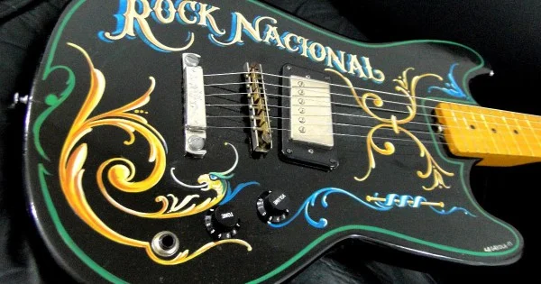

Rock Nacional Argentino
"Historia del Rock Nacional"

Los orígenes del rock de Argentina se remontan a la segunda mitad de la década de 1950, cuando llegó al país como parte de la fiebre internacional de las bandas de rock and roll estadounidenses.
Bandas de Rock Argentino
El rock argentino ha sido hogar de una gran cantidad de bandas influyentes:
- Los Gatos: Pioneros con su éxito "La Balsa".
- Manal: Blues y rock con identidad porteña.
- Sui Generis: El dúo legendario de Charly y Nito.
- Soda Stereo: El fenómeno más grande de Latinoamérica.
"Subgeneros del Rock Nacional"
Desde el progresivo hasta el punk, el rock nacional ofrece una diversidad única:
- Punk Rock: Los Violadores y Flema.
- Heavy Metal: Rata Blanca y Hermética.
Más información
En este video puedes encontrar más detalles acerca de la trayectoria del género.